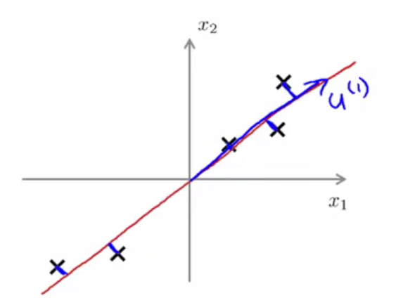
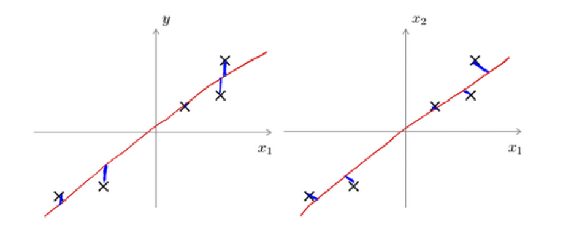
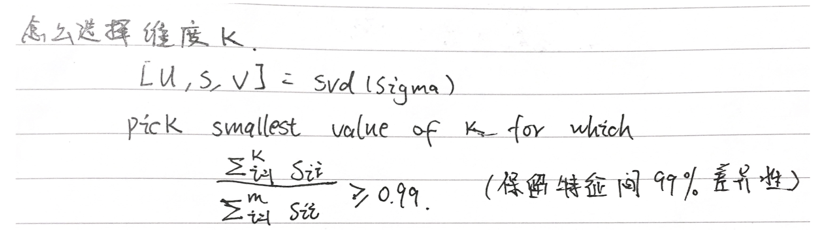
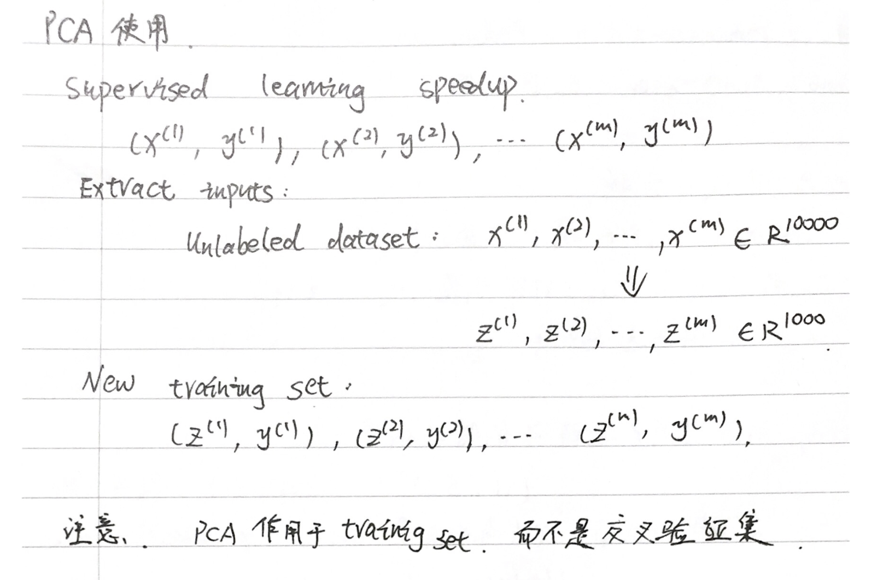

我们希望使用降维的原因有以下几个 ：
- 一个原因是数据压缩。
数据压缩不仅通过压缩数据使得数据占用更少的计算机内存和硬盘空间， 它还能给算法提速 。 - 另一个原因就是可视化。通过降维进行可视化，进而更好地理解数据。
特征降维的一般手段就是将高维特征投影到低维空间。
主成分分析 （Principal Component Analysis）
主成分分析(PCA)是最常见的降维算法。
顾名思义，PCA 能从冗余特征中提取主要成分，在不太损失模型质量的情况下，提升了模型训练速度。

如上图所示，我们将样本到红色向量的距离称作是投影误差（Projection Error）。以二维投影到一维为例，PCA 就是要找寻一条直线，使得各个特征的投影误差足够小，这样才能尽可能的保留原特征具有的信息。
问题是要将$n$维数据降至$k$维，目标是找到向量$u^{(1)}$,$u^{(2)}$,…,$u^{(k)}$使得总的投射误差最小。
主成分分析与线性回顾的比较：
主成分分析与线性回归是两种不同的算法。主成分分析最小化的是投射误差（Projected Error），而线性回归尝试的是最小化预测误差。线性回归的目的是预测结果，而主成分分析不作任何预测。
虽然都是找一条直线去拟合,但是:
- 计算loss的方式不同（垂直）。
- PCA没有标签Y（非监督）。

上图中，左边的是线性回归的误差（垂直于横轴投影），右边则是主要成分分析的误差（垂直于红线投影）。
PCA将$n$个特征降维到$k$个，可以用来进行数据压缩，如果100维的向量最后可以用10维来表示，那么压缩率为90%。同样图像处理领域的KL变换使用PCA做图像压缩。但PCA 要保证降维后，还要保证数据的特性损失最小。
算法流程
PCA 减少$n$维到$k$维：
- 第一步是均值归一化。我们需要计算出所有特征的均值，然后令 $x_j= x_j-μ_j$。如果特征是在不同的数量级上，我们还需要将其除以标准差 $σ^2$。
- 第二步是计算协方差矩阵（covariance matrix）$Σ$：
$\Sigma = \frac{1}{m}\sum\limits_{i=1}^{m}(x^{(i)})(x^{(i)})^T = \frac{1}{m} \cdot X^TX $
第三步是计算协方差矩阵$Σ$的特征向量（eigenvectors）:
可以利用奇异值分解（singular value decomposition）来求解，$(U,S,V^T) = SVD(\Sigma)$。从 $ U$中取出前$k$个左奇异向量，构成一个约减矩阵 $Ureduce$:
$U_{reduce} = (u^{(1)},u^{(2)},\cdots,u^{(k)})$
计算新的特征向量： $z^{(i)}$:
$z^{(i)}=U_{reduce}^T \cdot x^{(i)}$
选择主成分的数量（怎么选择维度k）
主要成分分析是减少投射的平均均方误差：
训练集的方差为：$\dfrac {1}{m}\sum^{m}_{i=1}\left| x^{\left( i\right) }\right| ^{2}$
我们希望在平均均方误差与训练集方差的比例尽可能小的情况下选择尽可能小的$k$值。
如果我们希望这个比例小于1%，就意味着原本数据的偏差有99%都保留下来了，如果我们选择保留95%的偏差，便能非常显著地降低模型中特征的维度了。
我们可以先令$k=1$，然后进行主要成分分析，获得$U_{reduce}$和$z$，然后计算比例是否小于1%。如果不是的话再令$k=2$，如此类推，直到找到可以使得比例小于1%的最小$k$ 值（原因是各个特征之间通常情况存在某种相关性）。
还有一些更好的方式来选择$k$，当我们在Octave中调用“svd”函数的时候，我们获得三个参数：[U, S, V] = svd(sigma)。
其中的$S$是一个$n×n$的矩阵，只有对角线上有值，而其它单元都是0，我们可以使用这个矩阵来计算平均均方误差与训练集方差的比例：
也就是：
在压缩过数据后，我们可以采用如下方法来近似地获得原有的特征：

特征还原
因为PCA仅保留了特征的主成分，所以PCA是一种有损的压缩方式，假定我们获得新特征向量为：
$z = U_{reduce}^Tx$。
那么，还原后的特征$x_{approx}$为：
$x_{appox}=U_{reduce}\cdot z$,$x_{appox}\approx x$。
PCA的使用

note: PCA并不适用于解决过拟合问题，使用正则化会更好